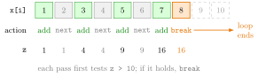

break, next and repeat¶
Definition¶
Three keywords change the normal flow of a loop:
nextends the current pass immediately and continues with the next pass of the loop.breakends the whole loop immediately; R continues with the first line after the loop.repeat { ... }is a loop without a condition. It runs its body again and again until abreakinside the body is executed.
In nested loops, next and break act on the innermost loop that contains them. Both are almost always placed inside an if statement, so that they run only when a condition holds.
Interpretation¶
next means "nothing more to do for this element", and break means "the job is finished". A for or while loop decides in its header how long to run; these keywords let the body interrupt that plan from inside.

The figure traces Example 1, which adds the odd numbers of 1:10 until the total exceeds 10. Each pass first checks the total, then skips even numbers with next. The green cells are added (total 1, 4, 9, 16), the grey cells are skipped, and in the pass for 8 the total 16 is already above 10, so break ends the loop. The values 9 and 10 are never visited.
A repeat loop puts the stopping test wherever you write the break, usually at the end of the body. That suits methods where the stopping rule is naturally checked after the next state has been computed: in the square-root method of Example 2 the change between guesses only exists after a new guess is made. Unlike a while loop, the body of repeat always runs at least once. Since repeat has no condition of its own, a missing or unreachable break gives an infinite loop, so a cap on the number of passes is good practice.
The pattern "update, test, then stop or continue" is the stopping step of an iterative algorithm.
A common mistake is putting next in a while loop before the line that updates the counter: the skipped pass also skips the update, the counter never moves on, and the loop never ends (Example 4).
Key Results¶
nextskips the rest of the current pass; the loop continues with its next pass.breakleaves the loop at once; code after the loop runs next.- In nested loops both keywords affect only the innermost enclosing loop.
repeathas no condition: it runs untilbreak, and its body runs at least once.- Every
repeatloop needs a reachablebreak; adding a cap on the number of passes makes it safe.
Examples¶
1. Skipping and stopping. Add the odd values of x until the running total first exceeds 10:
x <- 1:10
z <- 0
for (i in 1:length(x)) {
if (z > 10) {
break
}
if (x[i] %in% c(2, 4, 6, 8, 10)) {
next
} else {
z <- z + x[i]
}
}
z
#> [1] 16
The total is 9 before 7 is added and 16 afterwards; at the start of the next pass z > 10 is TRUE and the loop stops.
2. The square-root method with repeat. The stopping test comes after the new guess:
a <- 2
g <- a / 2
tol <- 1e-7
iterMax <- 500
iter <- 0
repeat {
g_new <- 0.5 * (g + a / g)
diff <- abs(g_new - g)
g <- g_new
iter <- iter + 1
if (diff <= tol | iter >= iterMax) {
break
}
}
c(Est = g, Reference = sqrt(a), Iter = iter)
#> Est Reference Iter
#> 1.414214 1.414214 5.000000
Unlike the while version, no artificial starting value for diff is needed: diff is computed before it is tested.
3. break in a nested loop. Only the inner loop is left:
for (i in 1:3) {
for (j in 1:3) {
if (j > i) {
break
}
print(c(i, j))
}
}
#> [1] 1 1
#> [1] 2 1
#> [1] 2 2
#> [1] 3 1
#> [1] 3 2
#> [1] 3 3
Each break ends the j loop, and the i loop continues with its next value.
4. Pitfall: next before the update. Adding the odd numbers up to 5 with a while loop. If i <- i + 1 stood at the end of the body, next would skip it whenever i is even, and the loop would never end. Updating first avoids this (i %% 2 is the remainder of i after division by 2):
i <- 0
total <- 0
while (i < 6) {
i <- i + 1
if (i %% 2 == 0) {
next
}
total <- total + i
}
total
#> [1] 9
Prerequisites¶
Related Concepts¶
Sources¶
- Programming for EOR · Week 3
- Lecture 3, Part 1 Loops and Control Flow, sections "Skipping and stopping: next and break" and "3. repeat loops"
Aliases: break, next, repeat, repeat loop, skip an iteration, exit a loop, continue Keywords: next skips a pass, break exits the loop, repeat until break, innermost loop
Last updated: 10 November 2026 16:43
break, next and repeatfor Loopwhile Loopif–else StatementMembership Operator %in%Loops versus VectorizationRecursive FunctionAlgorithm